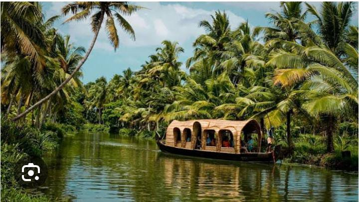
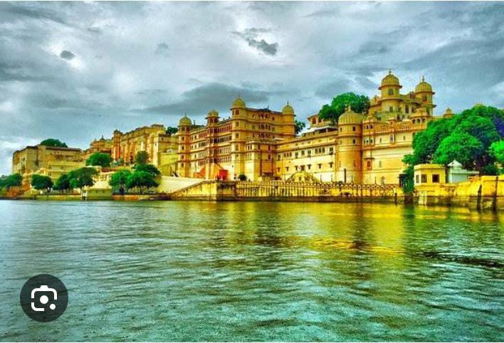

Welcome to the perfect winter getaway!
DELHI
A Mosaic of Cultures,Colors, Beauty and Contrasts: Welcome to Delhi!
Delhi, the pulsating heart of India, is a dynamic metropolis that seamlessly weaves together a rich tapestry of history, culture, and modernity. As the capital city, Delhi serves as a testament to the nation's journey through centuries. Old Delhi, with its narrow lanes and bustling markets, whispers tales of Mughal grandeur, while New Delhi, with its wide avenues and modern infrastructure, showcases a cosmopolitan spirit. Delhi boasts a rich cultural heritage with a history dating back thousands of years. It has been the capital of several empires, including the Mughals and the British, leaving behind a legacy of architectural marvels, vibrant markets, and a tapestry of diverse cultures
KERALA

Kerala's Coastal Charms: Where Golden Sands and Waves Embrace
Kerala, often referred to as "God's Own Country," is a captivating state in the southwestern part of India, renowned for its diverse landscapes, rich cultural heritage, and tranquil backwaters. Blessed with lush greenery, palm-fringed beaches, and mist-clad hills, Kerala offers a unique and immersive experience for tourists.With a harmonious blend of nature, culture, and wellness, Kerala beckons travelers to immerse themselves in its unique charm and unwind in a peaceful and enchanting setting.
UDAIPUR

Dive into Udaipur's Magic: Where Every Sunset Paints the City....
Udaipur, often referred to as the "City of Lakes" or the "Venice of the East," is a mesmerizing city in the Indian state of Rajasthan. Nestled amidst the Aravalli Hills, Udaipur is renowned for its regal palaces, ornate temples, and serene lakes, creating a picturesque and romantic ambiance.Udaipur is not just a historical and cultural hub but also a hub for art and literature. The city hosts various cultural events and festivals, adding to its vibrant and lively atmosphere.With its palatial architecture, romantic settings, and cultural richness, Udaipur stands as a captivating destination that invites travelers to experience the grandeur of Rajasthan in an enchanting and royal setting.